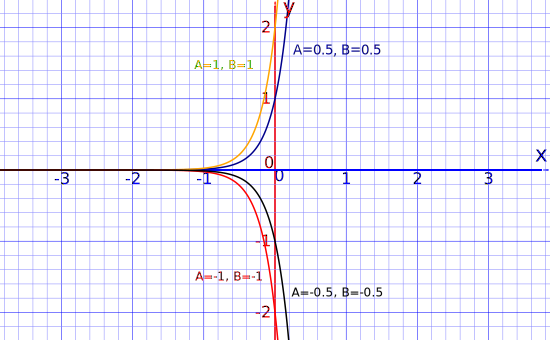
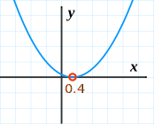

Second Order Differential Equations
Here we learn how to solve equations of this type:
d2ydx2 + pdydx + qy = 0
Differential Equation
A Differential Equation is an equation with a function and one or more of its derivatives:

Example: an equation with the function y and its
derivative dy dx
Order
The Order is the highest derivative (is it a first derivative? a second derivative? etc):
Example:
dydx + y2 = 5x
It has only the first derivative dy dx , so is "First Order"
Example:
d2ydx2 + xy = sin(x)
This has a second derivative d2y dx2 , so is "Second Order" or "Order 2"
Example:
d3ydx3 + xdydx + y = ex
This has a third derivative d3y dx3 which outranks the dy dx , so is "Third Order" or "Order 3"
Before tackling second order differential equations, make sure you are familiar with the various methods for solving first order differential equations.
Second Order Differential Equations
We can solve a second order differential equation of the type:
d2ydx2 + P(x)dydx + Q(x)y = f(x)
where P(x), Q(x) and f(x) are functions of x, by using:
Undetermined Coefficients which only works when f(x) is a polynomial, exponential, sine, cosine or a linear combination of those.
Variation of Parameters which is a little messier but works on a wider range of functions.
But here we begin by learning the case where f(x) = 0 (this makes it "homogeneous"):
d2ydx2 + P(x)dydx + Q(x)y = 0
and also where the functions P(X) and Q(x) are constants p and q:
d2ydx2 + pdydx + qy = 0
Let's learn to solve them!
e to the rescue
We are going to use a special property of the derivative of the exponential function:
At any point the slope (derivative) of ex equals the value of ex :

And when we introduce a value "r" like this:
f(x) = erx
We find:
- the first derivative is f'(x) = rerx
- the second derivative is f''(x) = r2erx
In other words, the first and second derivatives of f(x) are both multiples of f(x)
This is going to help us a lot!
Example 1: Solve
d2ydx2 + dydx − 6y = 0
Let y = erx so we get:
- dydx = rerx
- d2ydx2 = r2erx
Substitute these into the equation above:
r2erx + rerx − 6erx = 0
Simplify:
erx(r2 + r − 6) = 0
r2 + r − 6 = 0
We have reduced the differential equation to an ordinary quadratic equation!
This quadratic equation is given the special name of characteristic equation.
We can factor this one to:
(r − 2)(r + 3) = 0
So r = 2 or −3
And so we have two solutions:
y = e2x
y = e−3x
But that’s not the final answer because we can combine different multiples of these two answers to get a more general solution:
y = Ae2x + Be−3x
Check
Let us check that answer. First take derivatives:
y = Ae2x + Be−3x
dydx = 2Ae2x − 3Be−3x
d2ydx2 = 4Ae2x + 9Be−3x
Now substitute into the original equation:
d2ydx2 + dydx − 6y = 0
(4Ae2x + 9Be−3x) + (2Ae2x − 3Be−3x) − 6(Ae2x + Be−3x) = 0
4Ae2x + 9Be−3x + 2Ae2x − 3Be−3x − 6Ae2x − 6Be−3x = 0
4Ae2x + 2Ae2x − 6Ae2x+ 9Be−3x− 3Be−3x − 6Be−3x = 0
0 = 0
It worked!
So, does this method work generally?
Well, yes and no. The answer to this question depends on the constants p and q.
With y = erx as a solution of the differential equation:
d2ydx2 + pdydx + qy = 0
we get:
r2erx + prerx + qerx = 0
erx(r2 + pr + q) = 0
r2 + pr + q = 0
This is a quadratic equation, and there can be three types of answer:
- two real roots
- one real root (i.e. both real roots are the same)
- two complex roots
How we solve it depends which type!
We can easily find which type by calculating the discriminant p2 − 4q. When it is
- positive we get two real roots
- zero we get one real root
- negative we get two complex roots

Two Real Roots
When the discriminant p2 − 4q is positive we can go straight from the differential equation
d2ydx2 + pdydx + qy = 0
through the "characteristic equation":
r2 + pr + q = 0
to the general solution with two real roots r1 and r2:
y = Aer1x + Ber2x
Example 2: Solve
d2ydx2 − 9dydx + 20y = 0
The characteristic equation is:
r2 − 9r + 20 = 0
Factor:
(r − 4)(r − 5) = 0
r = 4 or 5
So the general solution of our differential equation is:
y = Ae4x + Be5x
And here are some sample values:

Example 3: Solve
6d2ydx2 + 5dydx − 6y = 0
The characteristic equation is:
6r2 + 5r − 6 = 0
Factor:
(3r − 2)(2r + 3) = 0
r = 23 or −32
So the general solution of our differential equation is:
y = Ae(23x) + Be(−32x)
Example 4: Solve
9d2ydx2 − 6dydx − y = 0
The characteristic equation is:
9r2 − 6r − 1 = 0
This does not factor easily, so we use the quadratic equation formula:
x = −b ± √(b2 − 4ac) 2a
with a = 9, b = −6 and c = −1
x = −(−6) ± √((−6)2 − 4×9×(−1)) 2×9
x = 6 ± √(36+ 36) 18
x = 6 ± 6√2 18
x = 1 ± √2 3
So the general solution of the differential equation is
y = Ae(1 + √2 3)x + Be(1 − √2 3)x

One Real Root
When the discriminant p2 − 4q is zero we get one real root (i.e. both real roots are equal).
Here are some examples:
Example 5: Solve
d2ydx2 − 10dydx + 25y = 0
The characteristic equation is:
r2 − 10r + 25 = 0
Factor:
(r − 5)(r − 5) = 0
r = 5
So we have one solution: y = e5x
BUT when e5x is a solution, then xe5x is also a solution!
Why? I can show you:
y = xe5x
dydx = e5x + 5xe5x
d2ydx2 = 5e5x + 5e5x + 25xe5x
So
d2ydx2 − 10dydx + 25y
= 5e5x + 5e5x + 25xe5x − 10(e5x + 5xe5x) + 25xe5x
= (5e5x + 5e5x − 10e5x) + (25xe5x − 50xe5x + 25xe5x) = 0
So, in this case our solution is:
y = Ae5x + Bxe5x
How does this work in the general case?
With y = xerx we get the derivatives:
- dydx = erx + rxerx
- d2ydx2 = rerx + rerx + r2xerx
So
d2ydx2 + p dydx + qy
= (rerx + rerx + r2xerx) + p( erx + rxerx ) + q( xerx )
= erx(r + r + r2x + p + prx + qx)
= erx(2r + p + x(r2 + pr + q))
= erx(2r + p) because we already know that r2 + pr + q = 0
And when r2 + pr + q has a repeated root, then r = −p2 and 2r + p = 0
So if r is a repeated root of the characteristic equation, then the general solution is
y = Aerx + Bxerx
Let's try another example to see how quickly we can get a solution:
Example 6: Solve
4d2ydx2 + 4dydx + y = 0
The characteristic equation is:
4r2 + 4r + 1 = 0
Then:
(2r + 1)2 = 0
r = −12
So the solution of the differential equation is:
y = Ae(−½)x + Bxe(−½)x

Complex roots
When the discriminant p2 − 4q is negative we get complex roots.
Let’s try an example to help us work out how to do this type:
Example 7: Solve
d2ydx2 − 4dydx + 13y = 0
The characteristic equation is:
r2 − 4r + 13 = 0
This does not factor, so we use the quadratic equation formula:
x = −b ± √(b2 − 4ac) 2a
with a = 1, b = −4 and c = 13
x = −(−4) ± √((−4)2 − 4×1×13) 2×1
x = 4 ± √(16− 52) 2
x = 4 ± √(−36) 2
x = 4 ± 6i 2
x = 2 ± 3i
If we follow the method used for two real roots, then we can try the solution:
y = Ae(2+3i)x + Be(2−3i)x
We can simplify this since e2x is a common factor:
y = e2x( Ae3ix + Be−3ix )
But we haven't finished yet ... !
Euler's formula tells us that:eix = cos(x) + i sin(x)
So now we can follow a whole new avenue to (eventually) make things simpler.
Looking just at the "A plus B" part:
Ae3ix + Be−3ix
A(cos(3x) + i sin(3x)) + B(cos(−3x) + i sin(−3x))
Acos(3x) + Bcos(−3x) + i(Asin(3x) + Bsin(−3x))
Now apply the Trigonometric Identities: cos(−θ)=cos(θ) and sin(−θ)=−sin(θ):
Acos(3x) + Bcos(3x) + i(Asin(3x) − Bsin(3x)
(A+B)cos(3x) + i(A−B)sin(3x)
Replace A+B by C, and A−B by D:
Ccos(3x) + iDsin(3x)
And we get the solution:
y = e2x( Ccos(3x) + iDsin(3x) )
Check
We have our answer, but maybe we should check that it does indeed satisfy the original equation:
y = e2x( Ccos(3x) + iDsin(3x) )
dydx = e2x( −3Csin(3x)+3iDcos(3x) ) + 2e2x( Ccos(3x)+iDsin(3x) )
d2ydx2 = e2x( −(6C+9iD)sin(3x) + (−9C+6iD)cos(3x)) + 2e2x(2C+3iD)cos(3x) + (−3C+2iD)sin(3x) )
Substitute:
d2ydx2 − 4dydx + 13y = e2x( −(6C+9iD)sin(3x) + (−9C+6iD)cos(3x)) + 2e2x(2C+3iD)cos(3x) + (−3C+2iD)sin(3x) ) − 4( e2x( −3Csin(3x)+3iDcos(3x) ) + 2e2x( Ccos(3x)+iDsin(3x) ) ) + 13( e2x(Ccos(3x) + iDsin(3x)) )
... hey, why don't YOU try adding up all the terms to see if they equal zero ... if not please let me know, OK?
How do we generalize this?
Generally, when we solve the characteristic equation with complex roots, we will get two solutions r1 = v + wi and r2 = v − wi
So the general solution of the differential equation is
y = evx ( Ccos(wx) + iDsin(wx) )
Example 8: Solve
d2ydx2 − 6dydx + 25y = 0
The characteristic equation is:
r2 − 6r + 25 = 0
Use the quadratic equation formula:
x = −b ± √(b2 − 4ac) 2a
with a = 1, b = −6 and c = 25
x = −(−6) ± √((−6)2 − 4×1×25) 2×1
x = 6 ± √(36− 100) 2
x = 6 ± √(−64) 2
x = 6 ± 8i 2
x = 3 ± 4i
And we get the solution:
y = e3x(Ccos(4x) + iDsin(4x))
Example 9: Solve
9d2ydx2 + 12dydx + 29y = 0
The characteristic equation is:
9r2 + 12r + 29 = 0
Use the quadratic equation formula:
x = −b ± √(b2 − 4ac) 2a
with a = 9, b = 12 and c = 29
x = −12 ± √(122 − 4×9×29) 2×9
x = −12 ± √(144− 1044) 18
x = −12 ± √(−900) 18
x = −12 ± 30i 18
x = −23 ± 53i
And we get the solution:
y = e(−23)x(Ccos(53x) + iDsin(53x))
Summary
To solve a linear second order differential equation of the form
d2ydx2 + pdydx + qy = 0
where p and q are constants, we must find the roots of the characteristic equation
r2 + pr + q = 0
There are three cases, depending on the discriminant p2 - 4q. When it is
positive we get two real roots, and the solution is
y = Aer1x + Ber2x
zero we get one real root, and the solution is
y = Aerx + Bxerx
negative we get two complex roots r1 = v + wi and r2 = v − wi, and the solution is
y = evx ( Ccos(wx) + iDsin(wx) )